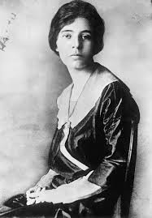
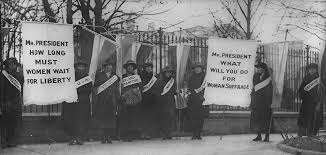

Biography
Alice Paul was born in New Jersey and attended Swarthmore College before living in England and pushing for women's voting rights. She returned to America in 1910 and became a leader in the suffragist movement.
Paul began her full-time suffrage career in 1912 and joined the National American Woman Suffrage Association (NAWSA). There, she gathered a group of young women who were willing to depart from the association's conservative tactics. The group of women officially broke away from NAWSA in 1914, and in 1916, she founded the National Women's Party (NWP) Going against public demand, Paul and the NWP continued to picket the White House and Congress after the United States entered World War I.
